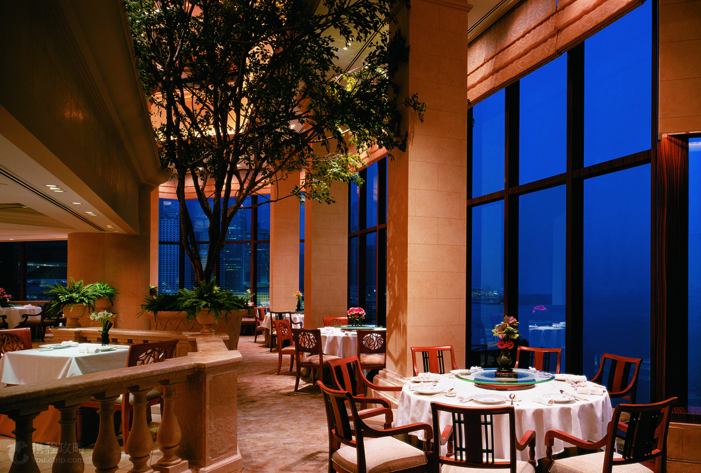
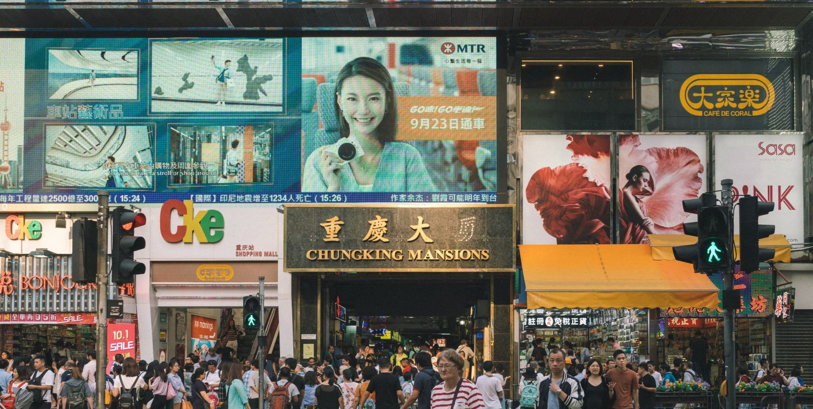
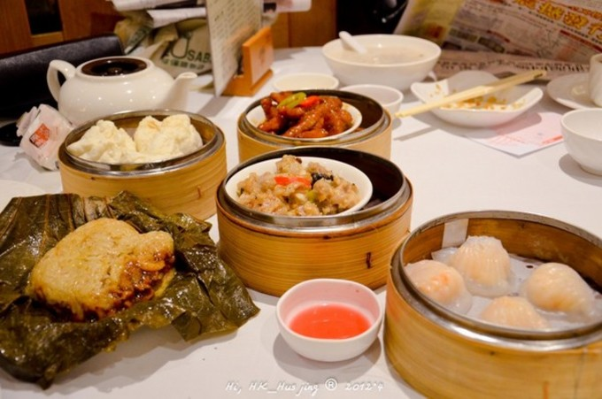

主页
美食
甜点&饮品
港式早茶
街边小吃
大排档
美景
酒店
我的
My Trip
麻花少女
等级：
Lv.1
现居：北海道
填写个人简介
我的消息
我的路线
我的订单
我的关注
我的收藏
我的足迹
退出登录
热门游记
最新发表
写游记
再远的路，都要走脚下这一步
“ 太平山顶是香港的地标之一，也是香港的最高点，在这里可以俯瞰香港全景。 可乘坐复古红色缆车前往山顶，全长1350米，中途设5个停车站，是全亚洲最早的缆车索道系统。 凌霄阁是山顶最显眼的建筑，顶层360°观景摩天台428是俯瞰维港的绝佳地点，建议晚上前来，夜景十分震撼。 除了凌霄阁，山顶还有杜莎夫人蜡像馆、山顶邮局等不错的景点，同样不可错过。
6254
269
594
海洋公园一日游的乐趣
公园很大，一些游乐设施推荐选择游玩，最好是先决定好海豚和海狮的表演时间，再去安排游乐和动物观看。 当然啦，推荐上山坐缆车，下山坐海洋列车，这样不重复。也可以反着来，看夜景下山。 礼拜五的海洋公园，人不是特别多，非常好~就是8月略微有点热啊。 逛游乐园，当然要工作日去比较好。人少呗。 海洋公园的打折券，很多地方都有，网上，一些地图的边边角角上很多。 进园后...
53562
939
10587

知名老茶楼里“叹”早茶
早年上海人认识港式和粤式饮食文化是从喝早茶开始的，几辆放食品的小推车被上百人招呼着，便觉得这是吃早餐最热闹的地方。到了香港之后方知此乃“小巫”。香港大一点的酒楼食肆，上百道点心，数百位食客会聚一堂不足为奇。不论工作日还是休息日，扶老携幼，呼朋唤友喝早茶成为香港一个很独特的文化现象。茶自不必说，现在人时间赶了，不太讲究，但是那些精美的港式点...
562
99
452
谁说带娃去香港只能玩迪士尼
小时候看TVB就经常看到南丫岛，印象中好像就是普通的小渔村的样子。去过之后，才发现真的出乎所料！有种远离了城市喧嚣的惬意感，小岛风情别有一番风味。现在是夏季，正是适合去南丫岛的时候。如果来香港玩的时间比较充足，我真心建议预留一天的时间去南丫岛体验一下。从中环码头出发，坐船大概3、40分钟吧，还是挺方便的。出发前可以提前查好船次，留意时间。 我们去的...
8542
548
594
三顾维多利亚港
维多利亚港就是香港最为重要的一张名片，这里是亚洲的第一大海港、世界三大夜景之一。无数的客船游船在这里来回穿梭。说香港是永恒的繁忙一点也不为过。即使在海上，依旧能够感受到香港的忙碌。就像是上海的外滩一般深入所有人心。只要想到香港，一定忘不了站到维多利亚港口吹着海风的那一个个夜晚。3次来香港，我都会选择来这样看一看，即使以后还会有机会来，我依然会...
5941
448
562
米其林餐厅也亲民
到了镛记门口就看到挂在橱窗垂涎欲滴的烧鹅，一整栋都是镛记的，很宽敞，坐下来看了菜单才发现一份烧鹅+叉烧的双拼要325，而14:00-17：00供应的双拼饭才100出头，后来我们才知道香港的大部分酒楼早中晚的价格差异很大，晚上要贵出许多。双拼分量很大，我们两个人吃到后面都腻了。烧鹅味道真是不错，皮酥肉嫩，而且一口咬下去真的有汁，再蘸上酸梅酱味道更别具风味...
46220
9552
94667
游走小街巷，寻味老香港
这个从小渔村发展起来的国际大都会，仍然有着她独有的风骨。浅水湾的海风和西贡低矮的房屋都显露着渐行渐远的渔村遗风，有着欧陆古风的赤柱将我们拉回到四五十年代的香港，而如今的香港，大楼林立中仍隐藏着人情味十足的小街巷，无论是上环的活里荷道或旺角的庙街都值得去逛逛。一到传统节日，人们仍然固守着老一辈的传统，喜欢去黄大仙拜拜许个愿，求求平安。悄然发现那...
46220
9552
94667
重新认识香港
旺角总是挂着老香港的旧标签。确实在这里能找到很多上个世纪就流传至今的建筑和一成不变的生活方式。如果你想要找到最具香港的“电脑窗口”式标牌，我想你来香港旺角不会感到失望。旺角的新旧楼宇林立，旧住宅楼宇地铺多为商店或餐厅。从旺角的地铁站出来经过天桥的我一开始是震惊的...完全不知道这些裹着头巾、东南亚式长相的人到底在这里干嘛，为什么会在这里，甚至开...
13562
639
4587
共143页 / 1714条
1
2
3
4
5
6
7
8
9
下一页 >>